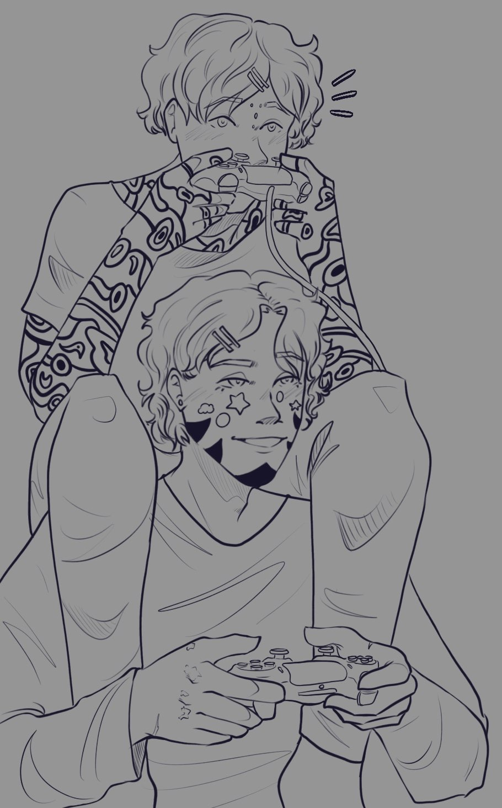
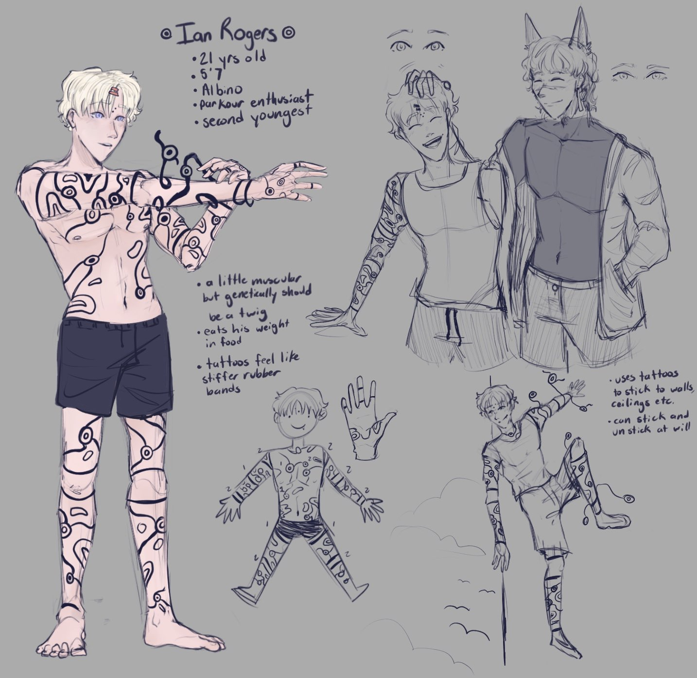
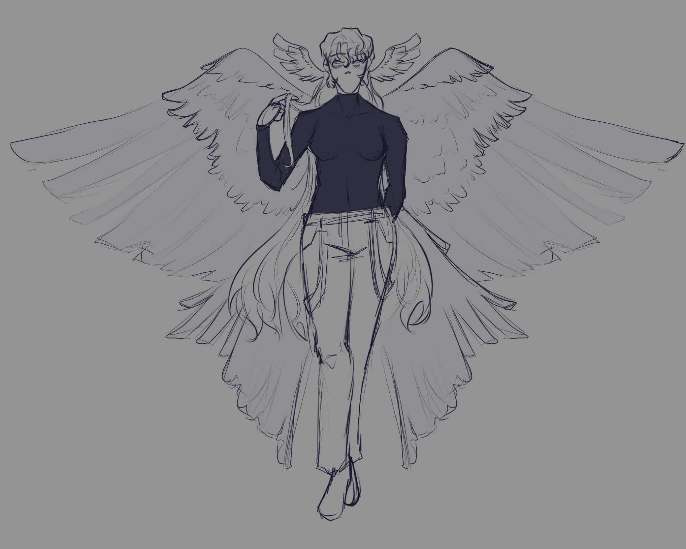
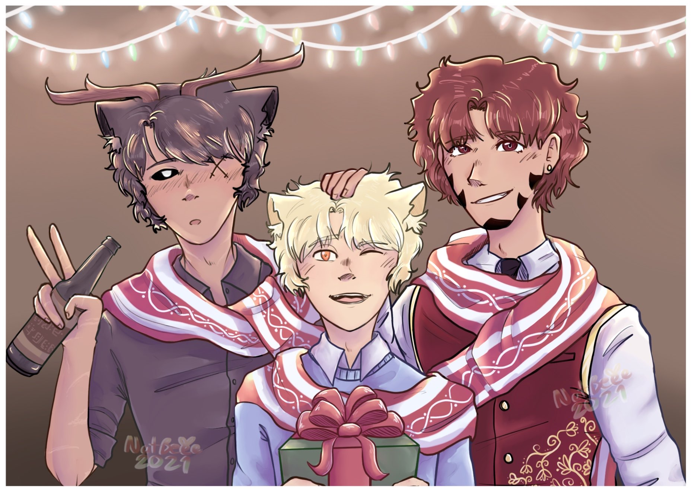

Ian was another guy taken in by Scott. Scott has a house in Annetenol but it acts more as a safehouse as he is in Shasport more often than not. Ian left his childhood house, not due to any conflict, but he seeked freedom when he acquired variant powers, a type of superpower that some are born with, and some get powers later on. He had the gene for powers from his father but they didn’t manifest until his brother awakened them with science. When Scott found Ian, he was still trying to figure out his powers and almost latched onto Scott as a source of comfort in a large, confusing city.



Guardian
The Guardians are a group of angel-like beings that mainly hover around Annetenol where it is more peaceful. They are not human but took on a familiar appearance since in the past people had been frightened of their true forms. Guardians, as the name suggests, guard people with a strict criterion. They do not tolerate extreme violence and step in when fights break out despite not happening often since they are in the city outskirts. They possess great strength and powers similar to variants. They tend to like their peace and quiet and do not go out of their way to interact with anyone except their own kind.

The Trio
After moving out of Scott’s house in Annetenol, Radar got his own house further away from the city and closer to a forest. There he met two men who would become his closest friends, Bakku and Will. They started living together as it was the most convenient and WIll needed a place to lay low as a company outside Shasport was hunting him. Bakku also had a rough past and rather than keep running and hiding out in the main city, he found he liked Rad’s and Will’s company and stayed at the house.